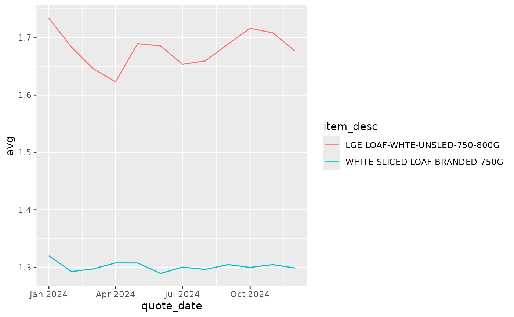

Introduction
The price quote functions will generally access and download the price quote data, but changes to the variables over the years and the nature of the data means that you’ll probably have to do some wrangling to get what you need - assuming what you’re interested in is the average retail price of stuff. The relevant functions are:
-
get_cpi_price_quotes()for data from 2020 onwards, and -
get_cpi_price_quotes_archive()for data from 2010-2019
The data is accessed from the url stored in
cpi_price_quotes_url(). The addresses of data 2010-2019 are
stored in archive_urls().
The data is returned as is - in order to look at prices we need to
exclude invalid records - pre February 2025 this is ones with a
validity not 3 or 4, post February 2025 `validity is
FALSE.
Sample code
Historic data
Lets look at some old bread prices.
library(ggplot2)
y <- 2013:2014
bread <- purrr::map(y, \(y) {
get_cpi_price_quotes_archive(y, foodonly = TRUE) |>
dplyr::filter(item_id %in% c(210102, 210111))
}) |> dplyr::bind_rows()
#> Acquiring pricequote2013.zip
#> Reading price_quote_2013_q1.csv
#> Reading price_quote_2013_q2.csv
#> Reading price_quote_2013_q3.csv
#> Reading price_quote_2013_q4.csv
#> Acquiring pricequote2014.zip
#> Reading price_quote_2014_q1.csv
#> Reading price_quote_2014_q2.csv
#> Reading price_quote_2014_q3.csv
#> Reading price_quote_2014_q4.csv
bread |>
dplyr::filter(validity %in% c(3,4)) |>
dplyr::group_by(lubridate::year(quote_date), item_desc) |>
dplyr::summarise(avg = mean(price)) |>
knitr::kable()
#> `summarise()` has grouped output by 'lubridate::year(quote_date)'. You can
#> override using the `.groups` argument.| lubridate::year(quote_date) | item_desc | avg |
|---|---|---|
| 2013 | LARGE LOAF-WHITE-UNSLICED-800G | 1.396095 |
| 2013 | WHITE SLICED LOAF BRANDED 750G | 1.249862 |
| 2013 | WHITE SLICED LOAF BRANDED 800G | 1.240884 |
| 2014 | LARGE LOAF-WHITE-UNSLICED-800G | 1.370320 |
| 2014 | WHITE SLICED LOAF BRANDED 800G | 1.187626 |
Recent data
We can compare with some more recent data:
# If you want to get more than 1 year you can do eg rep(2024:2025, 12) and
# rep(1:12, 2). But you don't necessarily need purrr::map2
y <- rep(2024)
m <- rep(1:12)
more_bread <- purrr::map2(y, m, \(y,m) {
get_cpi_price_quotes(y, m, foodonly = FALSE) |>
dplyr::filter(item_id %in% c(210102, 210111))
}) |> dplyr::bind_rows()
#> Reading 2024 1
#> Reading 2024 2
#> Reading 2024 3
#> Reading 2024 4
#> Reading 2024 5
#> Reading 2024 6
#> Reading 2024 7
#> Reading 2024 8
#> Reading 2024 9
#> Reading 2024 10
#> Reading 2024 11
#> Reading 2024 12
more_bread |>
dplyr::filter(validity %in% c(3,4)) |>
dplyr::group_by(quote_date, item_desc) |>
dplyr::summarise(avg = mean(price)) |>
ggplot2::ggplot() +
ggplot2::geom_line(ggplot2::aes(x = quote_date, y = avg, colour = item_desc))
#> `summarise()` has grouped output by 'quote_date'. You can override using the
#> `.groups` argument.
The validity variable changed in Feb 2025:
# Doing the same as more_bread, but without purrr::map2
latest_bread <- get_cpi_price_quotes(2025, 1:4, foodonly = FALSE) |>
dplyr::filter(item_id %in% c(210102, 210111)) |>
dplyr::mutate(valid = dplyr::case_when(quote_date <= "2025-01-01" & validity %in% c(3,4) ~ "Y",
quote_date >= "2025-02-01" & validity == 1 ~ "Y",
.default = "N"))
#> Reading 2025 1
#> Reading 2025 2
#> Reading 2025 3
#> Reading 2025 4
latest_bread |>
dplyr::filter(valid == "Y", quote_date >= "2013-01-01") |>
dplyr::group_by(quote_date, item_desc) |>
dplyr::summarise(avg_price = mean(price)) |>
knitr::kable()
#> `summarise()` has grouped output by 'quote_date'. You can override using the
#> `.groups` argument.| quote_date | item_desc | avg_price |
|---|---|---|
| 2025-01-01 | LGE LOAF-WHTE-UNSLED-750-800G | 1.721831 |
| 2025-01-01 | WHITE SLICED LOAF BRANDED 750G | 1.304189 |
| 2025-02-01 | LGE LOAF-WHTE-UNSLED-750-800G | 1.716102 |
| 2025-02-01 | WHITE SLICED LOAF BRANDED 750G | 1.324653 |
| 2025-03-01 | LGE LOAF-WHTE-UNSLED-750-800G | 1.747910 |
| 2025-03-01 | WHITE SLICED LOAF BRANDED 750G | 1.314762 |
| 2025-04-01 | LGE LOAF-WHTE-UNSLED-750-800G | 1.768971 |
| 2025-04-01 | WHITE SLICED LOAF BRANDED 750G | 1.314459 |
Sample data
Latest (post Jan 2025) data
mm23::get_cpi_price_quotes(2025, 3) |> dplyr::slice_sample(n = 5) |> t() |> knitr::kable()
#> Reading 2025 3| cs_id | CP0119101 | CP0116201 | CP0112202 | CP0118101 | CP0112303 |
| cs_desc | PRE-COOKED DISHES BASED ON MEAT, FISH, VEGETABLES, PASTA OR OTHER CEREALS, CHILLED OR FROZEN | ORANGES, TANGERINES AND SIMILAR CITRUS FRUITS, FRESH | MEAT OF PIGS, FRESH, CHILLED OR FROZEN | SUGAR | PORK, DRIED, SALTED OR SMOKED |
| quote_date | 2025-03-01 | 2025-03-01 | 2025-03-01 | 2025-03-01 | 2025-03-01 |
| item_id | 212918 | 212725 | 210707 | 212101 | 210808 |
| item_desc | FRZN READY-COOKD MEAL SERVES 1 | SMALL TYPE ORANGES PER PACK/KG | HOME KILLED PORK CHOP/STEAK | SUGAR -GRANULATED-WHITE-PER KG | BACON-BACK-PER KG |
| validity | FALSE | TRUE | TRUE | TRUE | TRUE |
| shop_code | 9808 | 807 | 46 | 2 | 60 |
| price | 0.00 | 2.50 | 16.65 | 1.09 | 10.76 |
| indicator_box | M | Q | NA | NA | NA |
| region | 13 | 9 | 12 | 3 | 6 |
| shop_type | 3 | 1 | 1 | 3 | 2 |
| shop_weight | 1 | 7 | 1 | 1 | 1 |
Pre Feb 2025 data
mm23::get_cpi_price_quotes(2021, 6) |> dplyr::slice_sample(n = 5) |> t() |> knitr::kable()
#> Reading 2021 6| cs_id | NA | NA | NA | NA | NA |
| cs_desc | NA | NA | NA | NA | NA |
| quote_date | 2021-06-01 | 2021-06-01 | 2021-06-01 | 2021-06-01 | 2021-06-01 |
| item_id | 211808 | 210403 | 220326 | 211808 | 310316 |
| item_desc | CHILLED POT DESSERT 125-200G | HOME KILLED BEEF-LEAN MINCE KG | TAKEAWAY CHICKEN & CHIPS | CHILLED POT DESSERT 125-200G | GIN PER NIP |
| validity | 3 | 3 | 3 | 1 | 3 |
| shop_code | 814 | 814 | 59 | 941 | 70 |
| price | 1.85 | 6.50 | 5.80 | 0.00 | 4.50 |
| indicator_box | NA | NA | NA | T | NA |
| region | 9 | 11 | 3 | 10 | 3 |
| shop_type | 1 | 1 | 2 | 1 | 1 |
| shop_weight | 1 | 1 | 1 | 1 | 1 |
Raw data formats
Raw data format (Feb 2025 onwards)
| COLUMN HEADING | DESCRIPTION |
|---|---|
| QUOTE_DATE | The year and month in which the individual price observation was collected. |
| CS_ID | Unique identification number of the Consumption Segment or Item collected. Value is equal to ITEM_ID if no CS alternative is available. |
| CS_DESC | Description of the Consumption Segment or Item collected. |
| ITEM_ID | Unique identification number of the Item collected. |
| ITEM_DESC | Description of the Item collected. |
| VALIDITY | The status of the individual price quote: |
| TRUE = Quote included in the current months index. | |
| FALSE = Quote not included in the current months index. | |
| SHOP_CODE | Shop code from which the individual price quote was obtained. |
| PRICE | Observed price on date of collection (in £GBP). |
| INDICATOR_BOX | Indicator used to highlight any item or price change: |
| C = Comparable – change in product being priced, new product is similar to the previous product. | |
| M = Missing – not sold at shop. | |
| N = Non-comparable – change in product being priced, new product is not comparable to the previous product. | |
| P = Current price unavailable for the period. | |
| Q = Supplementary message has been provided (the message is not published due to ONS disclosure rules). | |
| R = Recovery of price at end of sale or special offer. | |
| S = Sale price or special offer. | |
| T = Temporarily out of stock. | |
| W = Size change. | |
| PRICE_RELATIVE_CPI | The quote index for the individual price observation. (PRICE/BASE_PRICE_CPI). |
| PRICE_RELATIVE_RPI | The quote index for the individual price observation. (PRICE/BASE_PRICE_RPI). |
| LOG_PRICE_RELATIVE_CPI | The natural logarithm of the individual price relative (PRICE_RELATIVE_CPI). |
| LOG_PRICE_RELATIVE_RPI | The natural logarithm of the individual price relative (PRICE_RELATIVE_RPI). |
| STRATUM_WEIGHT | The stratum weight applicable to the item/stratum combination for the period. |
| STRATUM_TYPE | Describes the items stratification method: |
| 0 = Not stratified. | |
| 1 = Stratified by REGION. | |
| 2 = Stratified by REGION and SHOP_TYPE. | |
| 3 = Stratified by SHOP_TYPE. | |
| REGION | Approximation to Government Office Regions (GOR): |
| 1 = Catalogue collections (head office). | |
| 2 = London. | |
| 3 = SE. | |
| 4 = SW. | |
| 5 = East Anglia. | |
| 6 = East Midlands. | |
| 7 = West Midlands. | |
| 8 = Yorks & Humber. | |
| 9 = NW. | |
| 10 = North. | |
| 11 = Wales. | |
| 12 = Scotland. | |
| 13 = Northern Ireland. | |
| SHOP_TYPE | Shop type indicator: |
| 1 = Multiple (10 or more outlets). | |
| 2 = Independents (less than 10 outlets). | |
| 3 = Item not stratified by retailer. | |
| SHOP_WEIGHT | The relative weight (replication factor) for the shop/item combination. |
| BASE_PRICE_CPI | Observed or imputed base period price (CPI). |
| BASE_PRICE_RPI | Observed or imputed base period price (RPI). |
| STRATUM_CELL | Stratum cell of the individual price quote. This is dependent on STRATUM_TYPE (see above): |
| If STRATUM_TYPE = 0, STRATUM_CELL = 0 | |
| If STRATUM_TYPE = 1, STRATUM_CELL = REGION (as derived above) | |
| If STRATUM_TYPE = 3, STRATUM_CELL = SHOP_TYPE (as derived above) | |
| If STRATUM_TYPE = 2 and SHOP_TYPE = 1, then STRATUM_CELL = REGION | |
| If STRATUM_TYPE = 2 and SHOP_TYPE = 2, then STRATUM_CELL = REGION +13 | |
| TEMPORAL | Quotes collected on the Friday before the main index day (usually Tuesday) and excluded from the calculation of RPI. |
| TRUE = Temporal quotes | |
| FALSE = Non-temporal quote | |
| Use VALIDITY = TRUE and TEMPORAL = FALSE to filter quotes that have contributed to the construction of the RPI index. | |
| INDEX_ALGORITHM_RPI | The formula method used for RPI calculations (as set out in section 3.4 of the CPIH Technical Manual, 2019 edition): |
| 1 = Dutot (RA). | |
| 2 = Carli (AR). |
Raw data format (Pre Feb 2025)
| Column Heading | Description |
|---|---|
| quote_date | year and month of data collection (yyyymm) |
| item_id | identification of the item collected |
| validity | validity of the quote (only codes 3 and 4 used, except where indicator_box = ‘N’) |
| 3 = Validated by system | |
| 4 = Accepted internally by ONS staff | |
| shop_code | code of shop that the price was collected from |
| price | price of the item collected in the quote month |
| indicator_box | indicator used to highlight any item or price change |
| S = Sale | |
| R = Recovery | |
| M = Missing | |
| C = Comparable | |
| N = Non comparable | |
| T = Temporarily out of stock | |
| X = Comparable item on sale | |
| Z = Non comparable item on sale | |
| price_relative | collected price (current month) divided by base price |
| stratum_weight | the weight of the stratum that the price quote contributes to |
| stratum_type | type of stratification used |
| 0 = not stratified | |
| 1 = region. | |
| 2 = region and shop | |
| 3 =shop | |
| end_date | where end = 999999 price contributed to index for period otherwise price was omitted |
| region | where the location is |
| 1 = Catalogue collections | |
| 2 = London | |
| 3 = SE | |
| 4 = SW | |
| 5 = East Anglia | |
| 6 = East Midlands | |
| 7 = West Midlands | |
| 8 = Yorks & Humber | |
| 9 = NW | |
| 10 = North | |
| 11 = Wales | |
| 12 = Scotland | |
| 13 = NI | |
| shop_type | either multiple or independents. |
| 1 = Multiple (10 or more outlets) | |
| 2 = Independents (less than 10 outlets) | |
| shop_weight | estimated number of a specific supermarket within a region |
| base_price | price of an item at the base date (January of that year). |
| base_validity | validity in the base month (see validity above) |
| stratum_cell | type of stratification used |
| There are 3 types of stratum, | |
| by shop, by region and by region and shop. | |
| The stratum types and cells are as follows, | |
| Not stratified = 0 | |
| By shop; | |
| 1 = Multiple (10 or more outlets) | |
| 2 = Independents (less than 10 outlets) | |
| By region, | |
| 2 = London | |
| 3 = SE | |
| 4 = SW | |
| 5 = East Anglia | |
| 6 = East Midlands | |
| 7 = West Midlands | |
| 8 = Yorks & Humber | |
| 9 = NW | |
| 10 = North | |
| 11 = Wales | |
| 12 = Scotland | |
| 13 = NI | |
| By region and shop type, | |
| If the shop type is a multiple, then the stratum cell is | |
| equal to the regional stratum code. | |
| If the shop type is an independent, | |
| then the stratum cell is equal to the multiple code + 13 |